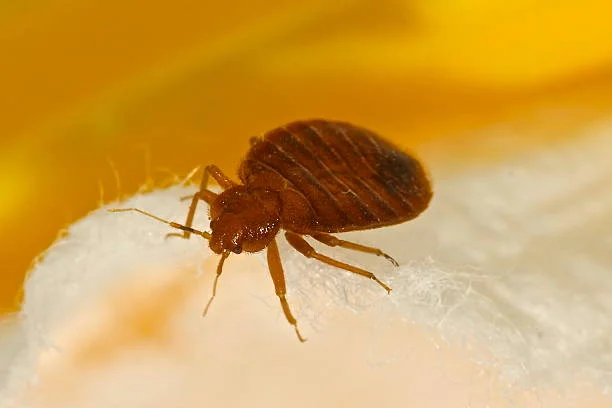

You’re about to drift off into a peaceful night’s sleep when suddenly you start to itch. You toss, you turn, and you scratch, but it’s no good. The next morning, you wake up covered in red welts, feeling like you’ve been feasted on by a tiny army. Congratulations! You might just have bed bugs. These pesky critters are more than just a minor inconvenience—they’re like the annoying ex who just won’t go away. So, what exactly are bed bugs, and how can you deal with them? Let’s dive into this itchy topic with a bit of humor and some serious advice.
First, let’s get to know your enemy. Bed bugs, or Cimex lectularius for those who like fancy Latin names, are small, reddish-brown insects that feed on human blood. Lovely, right? They’re about the size of an apple seed, but don’t let their tiny size fool you—they’re persistent little devils.
These bloodsuckers are nocturnal, meaning they’re most active when you’re blissfully unaware (a.k.a. sleeping). While you're dreaming of tropical vacations, they’re enjoying an all-you-can-eat buffet—courtesy of you! Bed bugs use their straw-like mouthparts to pierce your skin and drink up your blood. Sounds like a horror movie, but sadly, it’s real life.
Bed bugs are like the worst kind of houseguest—they invite themselves over without warning and refuse to leave. They can hitch a ride on just about anything: luggage, clothing, used furniture, even that innocent-looking book you picked up at the library. They’re not picky about their mode of transportation, as long as it gets them closer to their next meal (again, that’s you).
Contrary to popular belief, having bed bugs doesn't mean you're living in filth. These bugs don’t care if your house is a mess or sparkling clean. All they want is a warm body to feed on. So, while cleanliness is always a good idea, it’s not a surefire way to prevent a bed bug infestation.
You might be wondering, “How do I know if I have bed bugs?” Well, here are some telltale signs that these unwanted guests have taken up residence in your home:
Now that we’ve established that bed bugs are a nightmare, how do you get rid of them? Well, it’s not as simple as squashing a few and calling it a day. Bed bugs are notorious for being tough to eradicate. Here are some steps you can take to send them packing:
Start by thoroughly cleaning your living space. Wash all your bedding, curtains, and clothing in hot water, and dry them on the highest setting. Bed bugs can’t survive high heat, so this is a good way to kill off any hiding in your fabrics. Don’t forget to vacuum your mattress, bed frame, and any surrounding furniture. And then, for good measure, vacuum some more.
Bed bugs love clutter because it gives them plenty of places to hide. The less stuff you have lying around, the fewer hiding spots they’ll have. So, channel your inner Marie Kondo and start decluttering—because bed bugs definitely don’t “spark joy.”
Bed bugs are sneaky and can hide in the tiniest cracks and crevices in your walls, floorboards, and furniture. Use a caulking gun to seal up any cracks in your home. This will limit their hiding spots and make it harder for them to move around.
Investing in a good quality, bed bug-proof mattress cover can help trap any bugs that might be hiding in your mattress. These covers zip up tightly and prevent bed bugs from getting in or out. Just be sure to leave the cover on for at least a year (yes, you read that right) because bed bugs can survive for months without feeding.
If your bed bug problem is too much to handle on your own, it might be time to call in a professional exterminator. Bed bugs are resilient, and a professional can use specialized treatments to eliminate them for good. While it’s not the cheapest option, it’s often the most effective one.
Once you’ve successfully kicked bed bugs out of your home, the last thing you want is for them to come crawling back. Here are some tips to keep these pesky parasites at bay:
"An ounce of prevention is worth a pound of cure." — Benjamin Franklin (who probably never dealt with bed bugs, but the advice still holds)
Bed bugs are persistent little creatures that can cause a lot of discomfort. But with diligence, patience, and a bit of elbow grease (or professional help), you can evict these bloodsuckers from your home. Remember, bed bugs aren’t a reflection of your cleanliness—they’re just really, really annoying. So, don’t lose sleep over them (literally). Take action, stay vigilant, and soon you’ll be back to enjoying a peaceful, bite-free slumber.